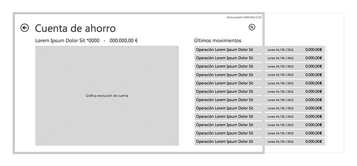
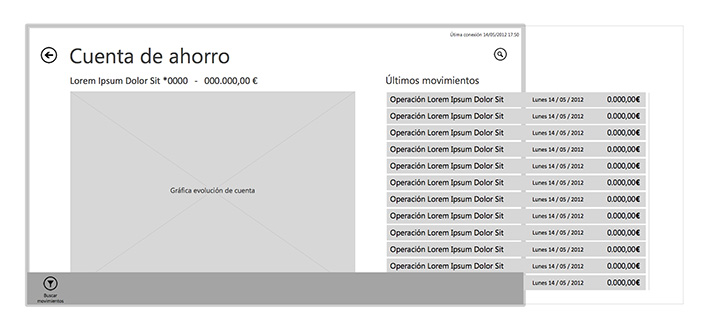
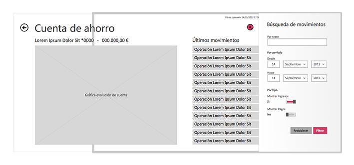
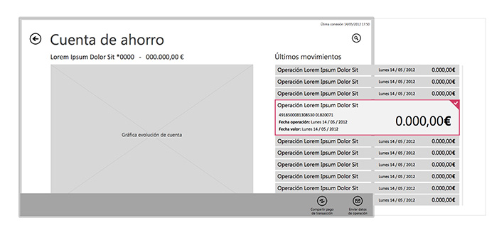
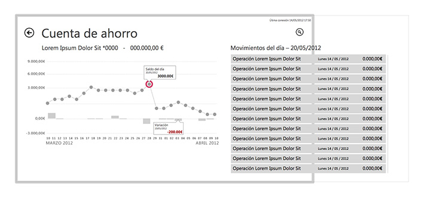
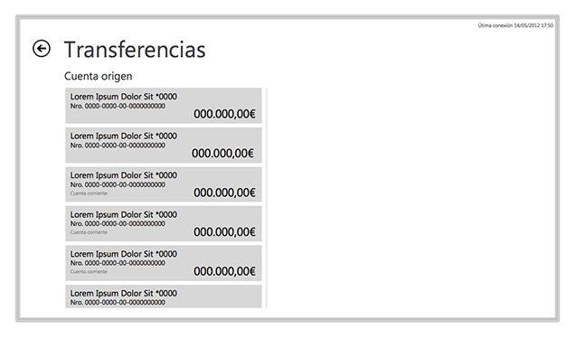
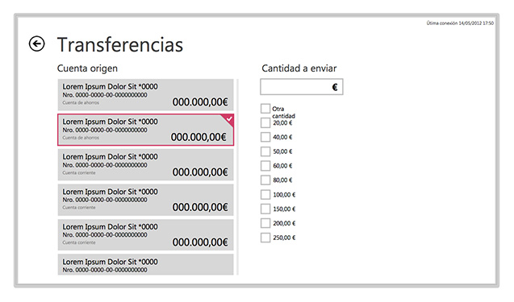
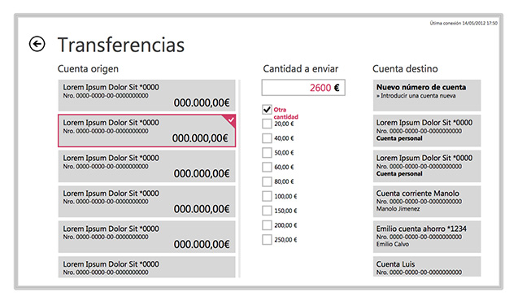
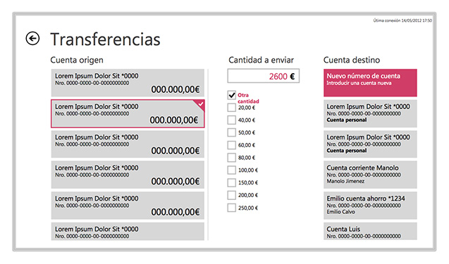
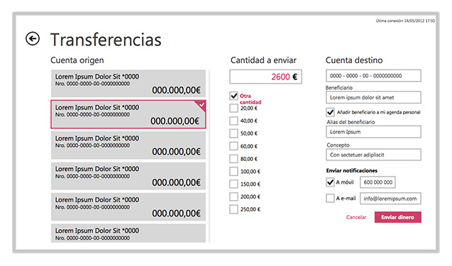

Windows 8 - Touch Apps
Project Scope and Interaction Design
Wireframing, Interacion specs, UX Consulting
These are a pair of projects where I had the opportunity to work designing touch applications for Win 8, they are an online banking app and a invoicing app.
Project 1: Banking App
A major bank hired us to design the Win 8 touch version of their iOS banking application, we made a deep analysis of their current service and proceeded to make the wireframes before developing.
Wireframes
Global Position

Showing the status of all the client's accounts and the position of the actions bar that is displayed when the user swipes inside from the lower screen border.
Savings account

Displays a chart with the evolution of the client's funds and a list of latest acount movements.

Swiping from the bottom edge brings up the actions possible in this screen, only the search feature is available.

Tapping on the search button brings the search form for the account's movements.

Long pressing on a specific movement selects it, a bottom edge swipe shows the actions that can be applied to the selected items.
Sample graph

Making a money transfer

The transfer money option shows a list with the client's source accounts.

Once the source account is selected the user is presented with a fixed set of options and also the possibility to type their own amount.

After selecting or typing the amount a list of options with the destined acount, with the option to add a new acount number.

Selecting adding a new acount number displays a form where the client can input the new number.

The final step after adding the new acount number is making the money transfer.
Project 2: e-Invoicing App
This application required mostly coming up with the new interface for a web application, I wrote the project briefing, the design goals and defined the methodology to be used. Most of the work was doing visual design by another team member, so my role was less designing the interaction or the project management and more of defining the information architecture, the navigation and some low level wireframes.
In these pages from out final delivery can be seen part of my contribution defining the goals and methodology.
Screenflow map
This map served us to define the general information architecture, navigation, interaction model while serving as a map for all the talks with the client: